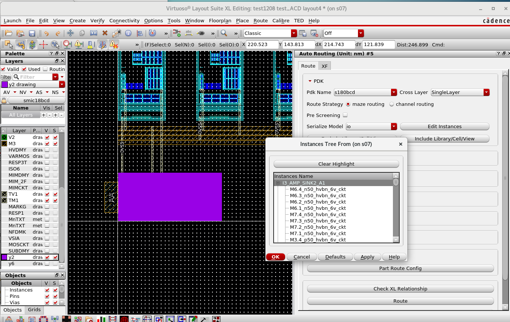
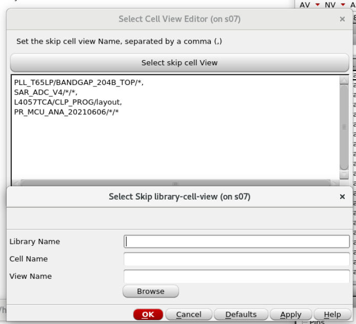
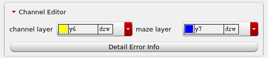
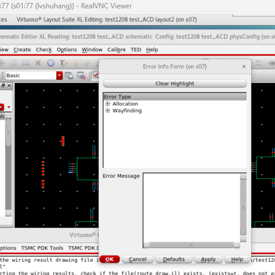
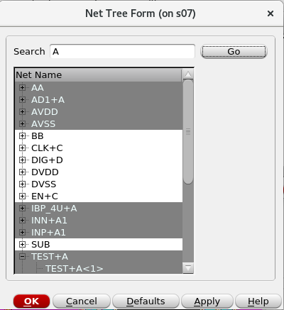
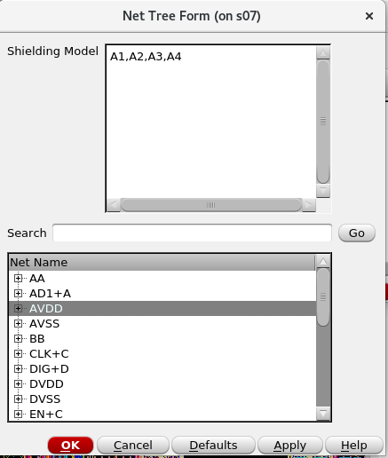
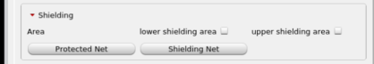
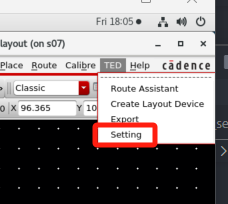
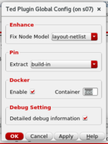

组件介绍
组件介绍
本小节从局部介绍布线器每个组成部分的主要作用，方便用户阅读和查找，了解相关功能的作用。
组件介绍
对于Ted布线器来说，主页面即为Route Assistant选项卡激活以后显示的页面部分，下文详细介绍针对主页面功能进行介绍，主页面主要分为PDK、Channel Editor、Net、Shieding、Metal、Via六个可折叠组件，这里将分别介绍折叠组件以及Route、Check XL Relationship、Export Config、Export Layer Data四个按钮具体功能。
PDK
PDK Name为目前TED布线器安装的pdk工艺，点击下拉框选项卡可以进行布线工艺的切换。切换选项卡以后Channel Editor、Shieding、Metal、Via会进行刷新和重置，这一步和在点击TED菜单栏后选择Route Assistant进行初始化等价。Cross Layer为布线策略。需要加Shielding的线成为为A线，其他线设置为C/D线。SingleLayer：同一通道只允许同层同布线方向的金属完成布线。MultiLayer：允许C/D线在同一通道上进行叠层。MultiLayerCDOverA：允许A线上平行走C/D线，但是不允许走其他A线。MultiLayerAOverA：允许任何线进行叠层。
Route Strategy是用来切换布线策略的，目前virtuoso布线器支持以下策略：maze routing：迷宫布线策略。采用迷宫算法，全版图均为走线资源，以连通性为第一优先级考虑，连线不规整的情况较多。channel routing：通道布线策略。用户指定布线区域（通道），以走线规整为第一优先级考虑。用户需要多次调整通道区域达到最优走线效果。针对大模块版图布线效果最优。
Pre Screening这个勾选框是用来勾选，是否在通道模式布线下启动筛选模式，该模式的含义是会单独把每一根线运行一遍布线，把那些单独运行失败的线筛选出来。默认关闭，这部分开启以后，在Channel Editor->Detail Error Info会针对这种布线筛选模式进行可视化展示，引导用户进行修改版图布局。Seriale Model序列化导出json数据的模式，该选项卡的作用是切换版图导出数据模式。当前提供以下模式：io: 完全解析版图。sio: 只解析顶层、与通道相交的shape。用该模式需要保证子电路版图的PIN在四周。
Edit instances可选择需要进行布线的子电路（Instances），点击按钮以后，会打开Instance Editor如下图:
该页面主要进行选择需要布线的
instance对象，在树形表格中选择instance Name以后版图中会对应高亮(使用y2层)。需要清除高亮，可以点击表格上方的Clear Highlight按钮，点击后会清除版图中所有的紫色高亮闪烁instance对象。当选择完成后，点击
ok，选择的instance则会被填入文本框中。下一次打开也能重复编辑。如果需要删除，则需要直接删除文本框中内容即可。当完成选择后，对于
Instance Editor表单点击Ok，配置信息载入内存中，下次点击Edit instances会发现被进行格式化了。格式化操作主要针对换行和去除空格。Exclude Library/cell/View该功能是用来在io版图数据导出模式下进行选择Lib/cell/view的。打开以后可以进行指定lib/cell/view选择是否跳过导出。

Channel Editor
Channel Editor为通道布线专用板块，主要功能是进行TED通道布线的相关配置进行修改如修改Channel layer和Maze layer等，还能主要针对布线失败的结果进行可视化，展示失败种类，定位错误，指导进一步调整版图布局等。

Channel Layer选项卡可以设置在版图中描述和使用进行通道布线的金属层，默认是y6。Maze Layer选项卡可以设置在版图中描述和使用进行迷宫布线的金属层，默认是y7。Detail Error Info按钮是进行了一次通道布线，并且布线失败以后，用户进行查看失败详细信息的入口。如果未进行布线，则会弹窗提醒。成功启动之后会弹出一个表单如下：
上述表单按照错误类型进行展示，用户展开以后，点击具体的错误，在版图上会有相应的高亮展示，连接通道的矩形会被紫色高亮，并且连接一条飞线显示(便于定位)，阻塞的通道会出现红色闪烁，理想路径会出现绿色闪烁。
注释：
理想路径：
根据错误类型，理想路径的含义略有不同：
Simple Route/Single Allocation/Allocation：通道布线尝试在这个路径上布线，但是布线失败。Wayfinding：不考虑约束的情况下，理论上的最短路径。寻路失败意味着程序认为在当前设置下通道中不存在一条连接两个pin的合法路径，此时展示一条理想的最短路径，提示可以尝试扩充相应通道。
阻塞通道：
在这个通道进行布线时，布线失败。原因通常是通道容量不够，障碍物等等，有时也可能是临近通道的障碍物导致的。
错误类型：
Simple Route：- 尝试直线/L型连线时遇到障碍物报出的错误。对于可以被一条直线或者L型连线连接的两个pin，通道布线会直接尝试直线/L型连线。如果路径上有障碍物则会报错。遇到此错误时，可以考虑挪动pin的位置，或者跳过这条线后尝试手动连接。
Single Wayfinding：- 单独布这条线时也无法找到路径报出的错误。遇到此错误时，通常意味着起点/终点没有被通道连接，可以考虑检查通道的连接性。
Single Allocation：- 单独布这条线时，寻路成功但是路径上的某个通道无法分配时报出的错误。遇到此错误时，通常意味着某个通道存在通道布线无法绕过的障碍物，或者其他问题。
Wayfinding：- 无法找到路径时报出的错误。遇到此错误时，通常意味着通道被阻塞，可以考虑扩充通道。
Allocation：- 寻路成功但是路径上的某个通道无法分配时报出的错误。遇到此错误时，通常意味着某个通道过于拥挤，可以考虑扩充通道。
Net
对于Net的选择部分，一共有三个按钮，分别是：Net、Exclude Net、Net Width，下面介绍这三个按钮的功能。
Net: 布线器只会选择Net选中的节点完成布线。在Net表单中选择需要布线的Net节点信息，如果需要多选需要按住ctrl进行选择。布线器将会对具有尖括号<>的Net进行分组，点击后会自动选择和其同一组的Net，例如：A1为一组节点，其包含A1<0>、A1<1>、A1<2>、A1<3>四个节点，点击A1，会进行批量选择，如图所示：

如果前后均点击组内包含多节点的Net，希望选择这两组，按住ctrl即可。该表单支持多选和搜索，搜索功能会根据用户输入自动选中可能的候选项。
Exclude Net: 选中的Net将不进行布线。Net Width：用于设置此Net在布线中的线宽n。需要注意的是，线宽设置依据Metal中设置的宽度和间距。具体公式为$n \times width + (n - 1) \times spacing$,其中n为Net Width设置的线宽。
Shielding
Shielding组件这部分主要针对信号线屏蔽节点进行设置。
Protected Net：设置需要进行保护的信号线。允许将一个或多个Net设置为一组。同一组的Net在布线过程中将优先并行在一起，并添加同一组的屏蔽线。这里支持搜索功能，和“一对多”的填写，即一组保护线（比如A1）可以选中多个Net。Shielding Net：对Protected Net的组设置需要进行屏蔽的线的Net。这里对于屏蔽的线由于是多对一或一对一的关系，即允许多个Shielding Model(A1,A2,A3)同时针对AVSS这一个Net进行屏蔽。这里的Shielding Model支持多输入，如图所示：

lower shielding area： 允许对下层进行Shielding保护。up shielding area：允许对上层进行Shielding保护。

Metal
Metal组件主要针对金属层进行配置，其参数有Layer、Direction、Width、Spacing、Priorty，下面将对部分参数进行详细解释：
Layer: PDK中的金属层，布线器针对不同工艺对名字进行了统一。Direction：设置不同金属层的布线方向。Width：布线器允许用户设置比PDK更为严格的宽度。Spacing：布线器允许用户设置比PDK更为严格的间距。Priorty：暂时无用。
Width和Spacing的设置如果小于DRC要求，布线器将会自动更正。 每一行最后的勾选框表示布线器是否会利用该层级完成布线。若该层级存在PIN而用户不利用该层级，则此PIN会跳过布线。
Via
Via组件主要针对通孔的EN要求进行配置。在配置选项中对VIA与金属层四周的间距进行设置，EN的设置如果小于DRC要求，布线器将会自动更正。
Check XL Relationship
布线检查在布线之前进行，目的在于检测出有可能导致布线失败的因素。
在理想情况下，Layout XL和schematic的Net连接关系是一致的。但由于各种复杂的因素，最终的Layout XL关系可能是错误的。Layout XL中自带的Annotation Browser工具可以提示Layout的连接关系，但在实际工作中这个连接关系可能是错误的。
TED布线器通过与schematic对比的方式，修复了这些连接关系。只需要依次点击Check XL Relationship -> check，当程序运行完成，Layout XL修复即可完成。
我们在check中提供了多个功能来尽可能在布线前规避可能导致的问题。
Check检查XL关系的主程序，再进行布线之前运行，对XL关系进行检查，该程序会生成XL关系的错误报告文件，剩下的一些Instances Unbound Alert等按钮均为针对报告进行高亮引导用户进行XL修复的功能。Instances Unbound Alert通过schematic进行修复，可能存在的问题是某些Instance没有在schematic进行绑定。此按钮可以高亮出没有绑定的Instance，由用户考虑是否进行绑定。Clear Connection Highlight清除所有高亮，主要针对Instances Unbound Alert中的高亮。Connection Relationship Hints显示需要进行布线的PIN的连接关系。类似于Layout XL中自带的Annotation Browser工具，但是为修复XL关系之后的结果。同时考虑了通道、配置等因素，选择的金属矩形更符合需要进行布线的资源。Short circuit indication在布局中Net信息错误，但是不会引起LVS问题，类似Layout XL中自带的Annotation Browser工具中的shorts。工具会显示出可能的短路。若不修复，布线器会忽略这个金属的Net信息。Failed pins布线器会将PIN逃逸到通道内部，在逃逸的过程中，如果因为拥塞等原因，PIN难以逃逸到通道内部，则会在此处进行显示。需要注意的是，在此处显示的PIN并非完全无法进行逃逸，只是难以通过很简单的线完成逃逸工作。
Route
点击Route按钮后，布线器会读取当前布线配置，进行布线，完整的布线流程分为五部分：
- 读取当前配置
- 读取当前电路版图信息
- 配置相关TED运行文件
- TED开始布线
- 完成virtuoso绘制
运行后，程序会清除上一次导出的配置信息，然后依次执行这五个步骤，并打印运行日志信息便于查看布线进度。
Export Config
导出当前布线配置，包括页面中选择的布线模式、需要布线的Net节点、金属层配置、via打孔配置等配置信息，导出形成Json配置文件，下一步可以根据该配置文件进行初始化布线器，方便快速初始化和移植。
Export Layer Data
导出当前Channel Layer 和Maze Layer的版图数据，便于debug。
Setting
Setting 部分主要分为四个部分：Enhance、Pin、Docker、Debug Setting，启动方式和页面如下图所示：


下面将详细介绍这三部分
Enhance表示增强板块用来修复XL terminal不规范导致的terminal无法对齐的问题，默认关闭。(测试阶段，不建议开启)Pin是针对pin的提取模式，主要分为几种提取模式：build-in是使用virtuoso自身维护数据结构去提取pin信息；MnTXT是使用MnTXT层去做识别提取，那么只要标注为MnTXT的label就认为是pin； 同理，layer-pin识别如果是label并且lpp的第二个元素为pin，那么就认为是pin。Docker勾选上之后对于Route运行模式将在Docker容器中进行，默认开启。Debug Setting中Detailed Debug information勾选上以后会激活布线GUI启动过程中的详细打印信息，默认开启。
其他
这一部分主要介绍便于使用TEDvirtuoso布线器的一些相关操作。
删除布线结果
当使用Route布线完毕之后，布线器会将布线结果绘制在virtuoso版图中，并且会将这些连线加入ted_group分组，这样一来，用户可以方便的删除布线结果。因此只需要在virtuoso版图中用鼠标选中对应布线结果，然后Delete删除即可。